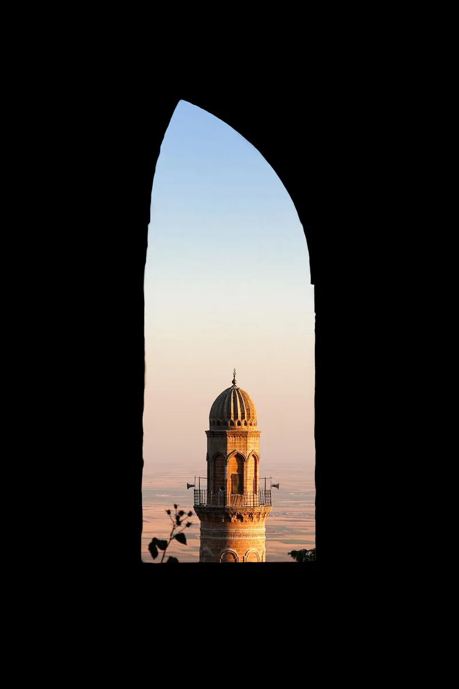
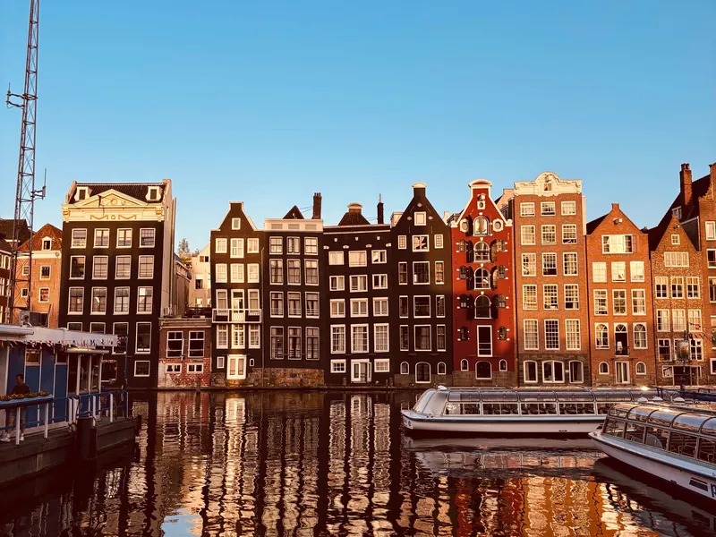

Galerie Dédal des Couleurs
Venez découvrir les photographies de nos artistes photographes exposés dans notre galerie de 50m²
Nous découvrirNos œuvres
Quelques-unes de nos œuvres exposées
Les couleurs et les jeux de lumière font l’authenticité de la photographie
-
Jean Marc Bonnel -

burcubyzt_85 -

Elifinatlasi -

Beyza Kaplan -

Eusebiu Soica -

Mehmet Çetinkaya